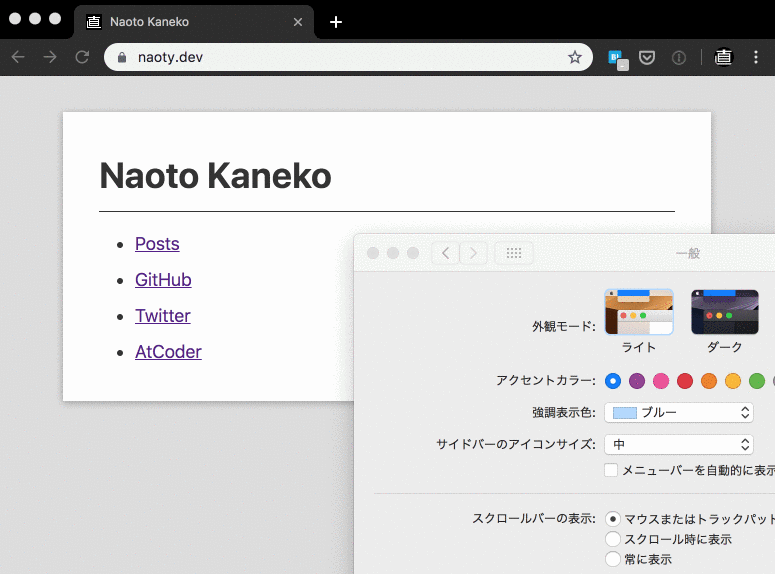

ダークモードのサポート
このホームページがOSのダークモードをサポートした。macOSとAndroidで動作確認した。

ダークモードをサポートするには、以下のようにメディアクエリを使ってダークモードで適用するスタイルを指定する。
@media (prefers-color-scheme: dark) {
body {
background-color: #2e3440;
}
}
ダークモード用のカラースキーマには、VSCodeでも使っているNordを参考にしている。